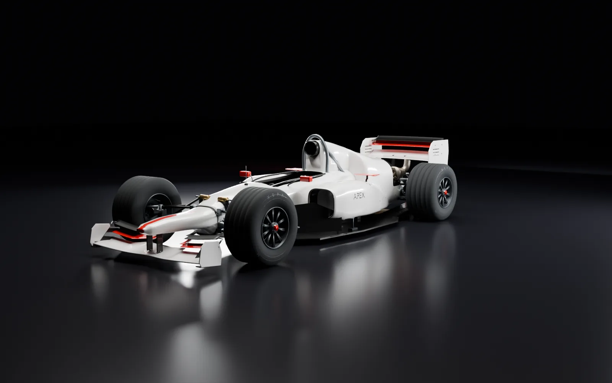
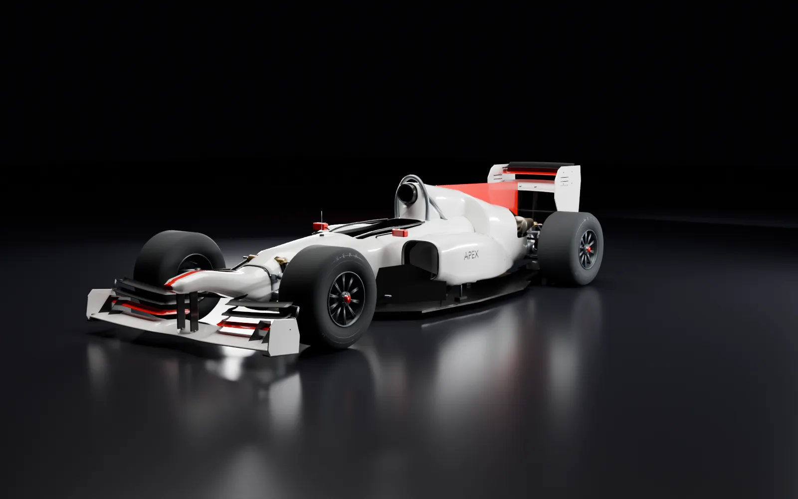
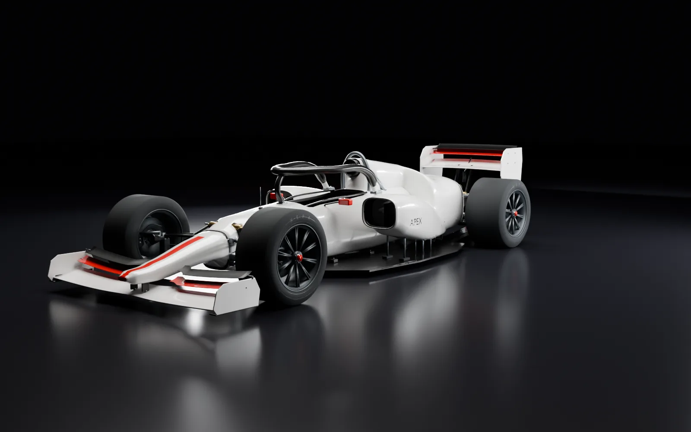

1990. 2004. 2010. 2026.
Jede Karriere beginnt in einem echten Reglement. Es legt fest, welche Motoren erlaubt sind, ob nachgetankt wird, wie viel das Auto wiegen muss und wie Punkte vergeben werden. Ein Setup, das 2004 gewinnt, ist 2010 mit vollem Tank zu schwer.
Länger, schwerer, teurer
Gewichte 2004 bis 2026 mit Fahrer. Die Budgets sind Spielwerte für ein kleines Team, keine echten Teambudgets.
Das Zeitalter der Konstrukteure
3,5 Liter. Zwölf Zylinder. Deine Entscheidung.
Die Turbos sind verboten, das Reglement lässt viel offen. Du wählst V8, V10 oder V12, Quer- oder Längsgetriebe, Handschaltung oder Elektrohydraulik. Dein erstes Ziel ist ein Auto, das die Distanz überlebt.
- Motor
- 3,5 l, bis 12 Zylinder, 15.000/min
- Mindestgewicht
- 500 kg ohne Fahrer
- Kalender
- 16 Rennen
- Punkte
- 9 · 6 · 4 · 3 · 2 · 1
- Sprit pro Runde
- 2,6 kg, kein Nachtanken
In der Fahrerwertung zählen nur die elf besten Ergebnisse.

Am Limit des V10
18.000 Umdrehungen. Kein Platz für Kompromisse.
Rillenreifen, Saug-V10 und Tankstopps bestimmen die Saison. Weil nachgetankt wird, startest du leicht und kommst öfter an die Box. Ein schneller Entwurf nützt wenig, wenn der Motor das Wochenende nicht durchhält.
- Motor
- 3,0 l V10, bis 20.000/min
- Mindestgewicht
- 600 kg mit Fahrer
- Kalender
- 18 Rennen
- Punkte
- 10 · 8 · 6 · 5 · 4 · 3 · 2 · 1
- Sprit pro Runde
- 2,3 kg, Nachtanken erlaubt

Die Suche nach dem Luftstrom
Doppeldiffusor. F-Duct. Ein voller Tank.
Zum ersten Mal seit Jahren nimmt jedes Auto den Sprit für die ganze Distanz an den Start. Mit vollem Tank fährst du anders als mit leerem, und die Reifen leiden darunter. Verpackung und Kühlung zählen so viel wie der Doppeldiffusor.
- Motor
- 2,4 l V8, bis 18.000/min
- Mindestgewicht
- 620 kg mit Fahrer
- Kalender
- 19 Rennen
- Punkte
- 25 · 18 · 15 · 12 · 10 · 8 · 6 · 4 · 2 · 1
- Sprit pro Runde
- 2,4 kg, kein Nachtanken
Länge und Radstand 2010 sind eine repräsentative Rekonstruktion, keine Werksmaße eines bestimmten Autos.

Die Energie entscheidet
Aktive Aerodynamik trifft elektrischen Vortrieb.
Kompaktere Autos, aktive Flügel und 350 kW elektrische Leistung. Die Frage am Ende jeder Geraden lautet: Wie viel Energie ist noch da? Und wie viel Kühlung kostet der schnellste Antrieb?
- Motor
- 1,6 l V6-Turbo + 350-kW-MGU-K
- Mindestgewicht
- 770 kg mit Fahrer
- Kalender
- 23 Rennen
- Punkte
- 25 · 18 · 15 · 12 · 10 · 8 · 6 · 4 · 2 · 1
- Sprit pro Runde
- 1,75 kg, kein Nachtanken
Felgen und Radebenen nach dem FIA-Reglement, Außenflächen und Gesamtlänge eigene Rekonstruktion.
Alle vier übereinander
Seitenansichten aus den Spielmodellen, alle im selben Maßstab. Von 1990 bis 2026 ist das Auto 73 cm länger geworden.


Wähle deine Epoche
Die Epoche legst du beim Start der Karriere fest. Ein schnelles Rennen geht in jeder.